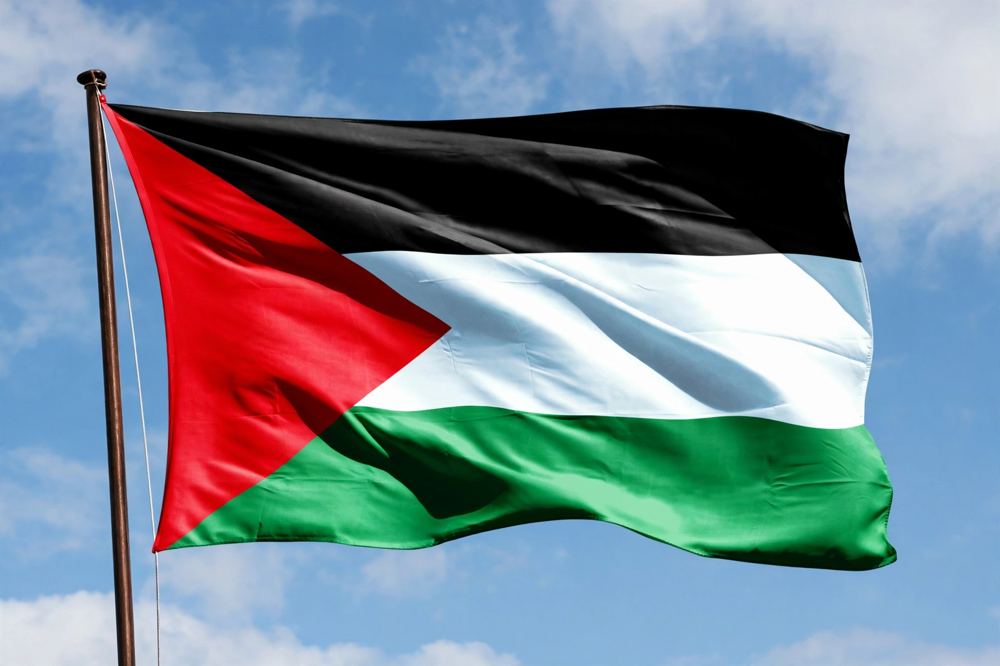

From Wikipedia, the free encyclopedia
| Palestine Liberation Organization (PLO) | |
| Founded | 28 May 1964, Jerusalem (under Arab League auspices) |
|---|---|
| Purpose | National liberation movement; recognised representative of the Palestinian people |
| Chairman | Mahmoud Abbas (since 2004); predecessors: Ahmad Shukeiri (1964–67), Yasser Arafat (1969–2004) |
| Structure | Palestinian National Council (legislature-in-exile), Central Council, Executive Committee |
| Major factions | Fatah (largest), Popular Front for the Liberation of Palestine (PFLP), Democratic Front (DFLP), and others |
| Status | UN observer since 1974; signatory of the Oslo Accords; founder of the Palestinian Authority (1994) |

The Palestine Liberation Organization (PLO; Arabic: منظمة التحرير الفلسطينية, Munaẓẓamat at-Taḥrīr al-Filasṭīniyyah) is a Palestinian nationalist coalition founded in 1964 with the declared goal of liberating Palestine and establishing an independent Palestinian state. Recognised by more than 100 countries and by the United Nations (since 1974) as the "sole legitimate representative of the Palestinian people," the PLO long waged an armed struggle against Israel before renouncing terrorism, recognising Israel's right to exist, and signing the Oslo Accords (1993–95), under which it established the Palestinian Authority to govern parts of the West Bank and Gaza Strip.
The PLO was created at an Arab League summit's initiative in 1964, with the Egyptian-backed Ahmad Shukeiri as its first chairman and the Palestine Liberation Army as its military wing; its founding charter denied the legitimacy of Israel's creation and rejected Zionism. The Arab defeat in the Six-Day War of 1967 discredited the old leadership; guerrilla factions, above all Yasser Arafat's Fatah, took control, and Arafat became chairman in February 1969. Reconstituted as an umbrella of fedayeen organisations — Fatah, the Marxist PFLP and DFLP, as-Sa'iqa, the Arab Liberation Front, and others — the PLO built a quasi-state in Jordan until its expulsion to Lebanon after the Black September conflict of 1970–71, and then in Lebanon until Israel's 1982 invasion drove its leadership into exile in Tunis.
The 1970s brought both international recognition — Arafat's 1974 address to the UN General Assembly, observer status, and Arab League recognition at the Rabat summit — and notoriety for attacks by PLO factions and affiliates, including aircraft hijackings and the Munich Olympics massacre carried out by Black September. Expelled from Beirut in 1982, the PLO was shaken by the First Intifada (1987), a mass uprising in the occupied territories that shifted the movement's centre of gravity. In November 1988, the Palestinian National Council in Algiers proclaimed the State of Palestine and, in Arafat's subsequent Geneva statement, accepted UN Resolutions 242 and 338 and renounced terrorism — opening the way to a US–PLO dialogue. The PLO's support for Iraq in the 1990–91 Gulf War cost it Gulf funding and the expulsion of Palestinians from Kuwait, weakening it on the eve of the Madrid and Oslo peace processes.
In the 1993 Declaration of Principles, negotiated in secret in Oslo, the PLO recognised Israel and Israel recognised the PLO; Arafat returned to Gaza in 1994 to head the new Palestinian Authority (PA). The arrangement was meant to be transitional to a final-status settlement that never arrived; after the failure of Camp David (2000) and the Second Intifada, the PA's authority fragmented, and Hamas's victory in the 2006 legislative elections and seizure of Gaza (2007) left the PLO-affiliated leadership governing only the West Bank. Mahmoud Abbas succeeded Arafat as PLO chairman in 2004 and as PA president in 2005. The PLO remains the internationally recognised umbrella of the Palestinian national movement and the formal signatory of its treaties, though critics — including Hamas and Palestinian reformers — charge it with ossification and demand elections to its National Council.